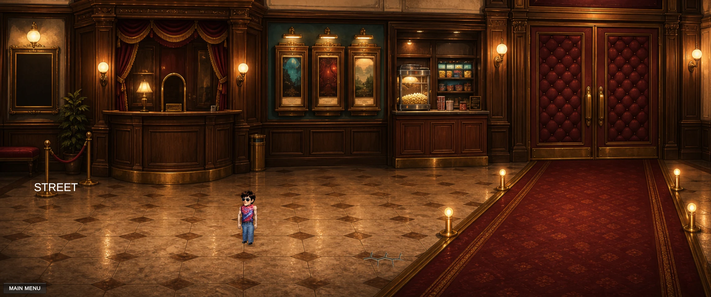

Bellweather House
Murder Mystery opens from the main menu. Investigate Walter’s death, interview the guests, inspect the weapon and bring together the evidence in your notebook.

Start with the systems you can play today. Further down are the town events and campaign branches described in the design. Those ideas have no announced release dates.
Murder Mystery opens from the main menu. Investigate Walter’s death, interview the guests, inspect the weapon and bring together the evidence in your notebook.
Play the guitar, bass, drum or vocal chart on a song, choose a difficulty and review the score. The library also accepts imported music. In town you can visit the band’s bar and the UNSE club.
The two-hour world timetable includes public visits, work and travel home. Residences have personal storage and rest spots. Rest can restore health as world time passes.
The Grand FOB intelligence map already issues missions and records battle results. At sea, the mission library, fleet command, carrier air wings and damage-control stations are part of Ocean Operations.
Homes have a place to cook, from apartment kitchens to barrel fires in slum housing. General household cooking is deferred. The specific Put It In Your Mouth shrimp recipe already has a separate quest.
The proposed town event brings Beaver Machine, the Stone City Orchestra and CuntPuncher together. The design calls for individual sets and a group finale, with the venue depending on what has happened in town.
The A.S.S. already has agents, duty assignments and a detention facility. The larger story design connects surveillance, detentions and conflict with the local police to the town’s political situation.
The design follows individual ambitions and faction goals across town. It calls for wider consequences from who survives, which institutions remain standing and which alliances the player builds.
The archaeologist can already screen a reconstruction of the Valley’s origins. The proposed campaign branch lets an intervention in the past change the dam, FoundryStop and the modern town.
Ghost-hunting equipment and the Zombie Chefs have their own in-game systems. Broader ideas include séances, resurrection and the ability to raise characters outside the chef roster.
The design calls for ancient technology that changes how characters respond to others. It connects a future Beaver Tech market to restoring the dam and gives players more ways to resolve conflicts through influence.
The design describes an encounter with a force that responds to changes in the timeline. The proposed outcome depends on what a player says and what has happened to the Valley.
In one proposed ending, all souls survive and Trump and Putin are imprisoned or reformed. Beaver Machine premieres a new album on the White House lawn. In the other branch, eliminating every soul brings the player before the World State Formatter.

See the project’s support options and how to get in touch.
Support the Valley →